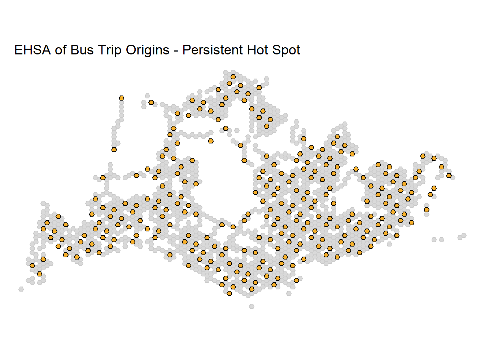
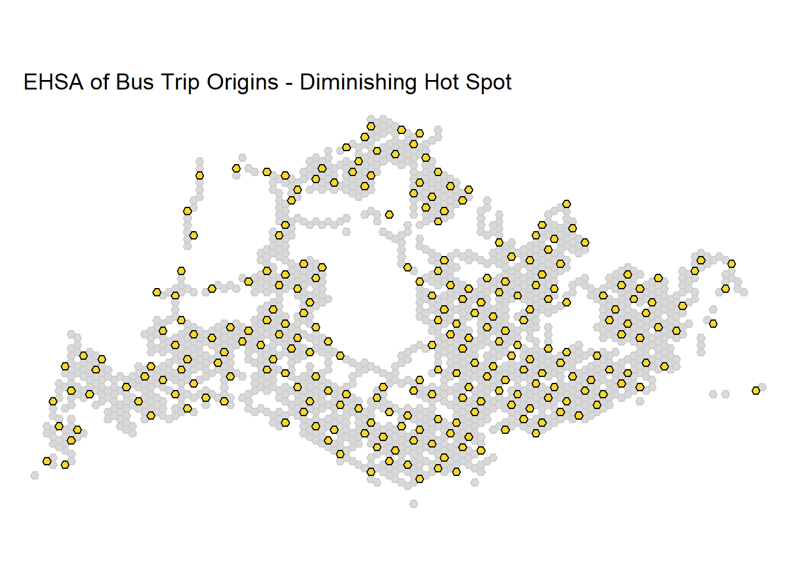
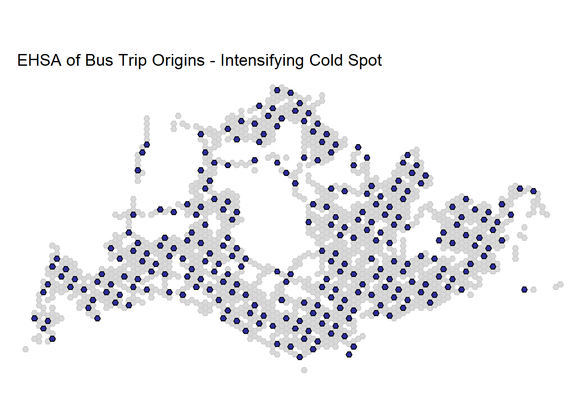
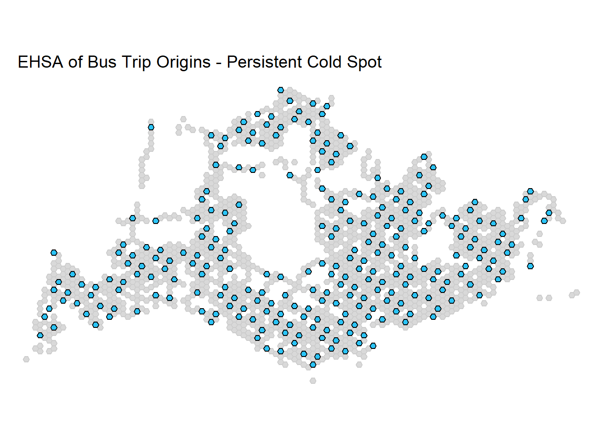
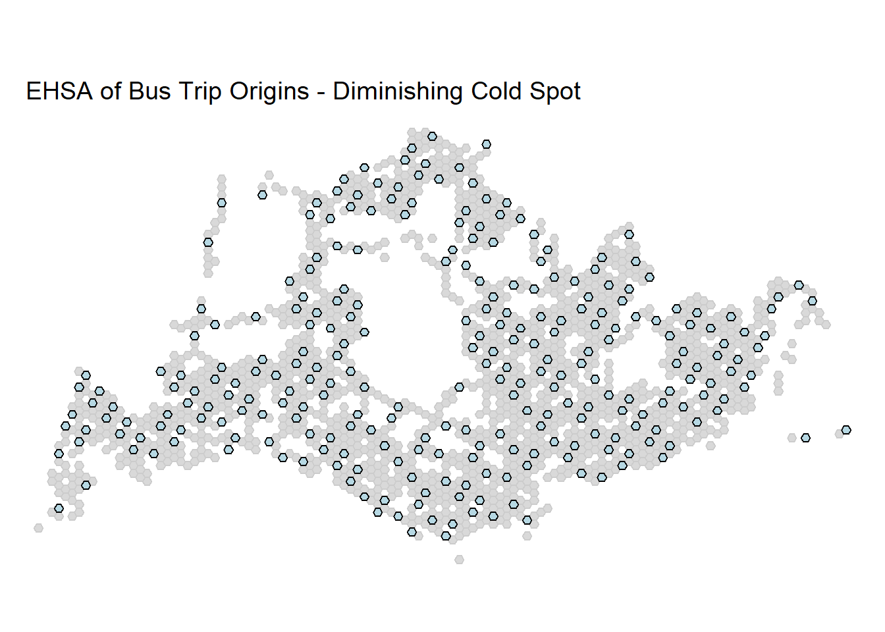
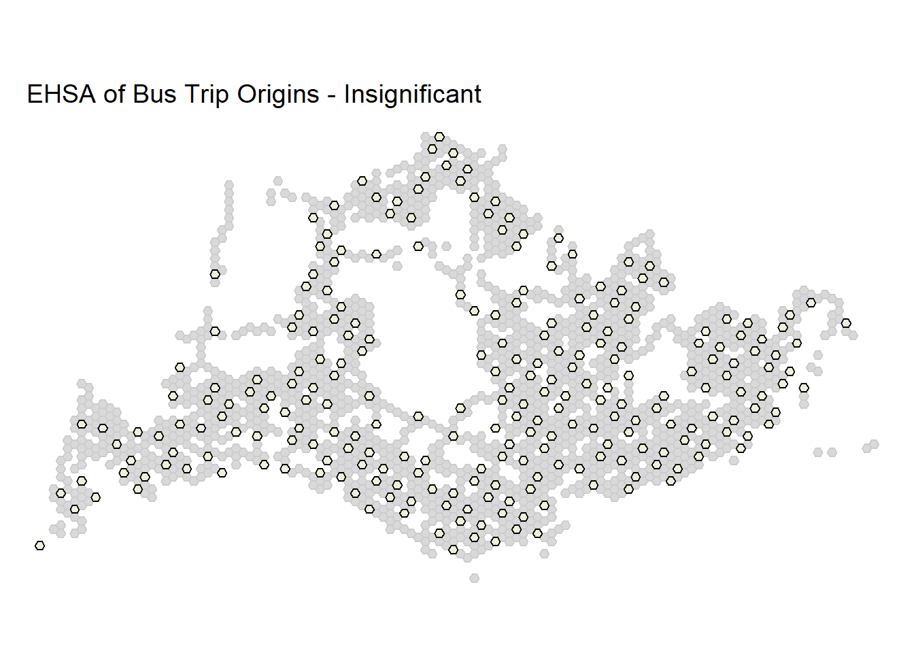

Take Home Exercise 2
Urban Mobility Analysis: LMSA & EHSA on Bus OD Data
1. Load R packages
2. Importing Data
2.1 Bus Stop Location
BusStop = st_read(dsn = "data/geospatial/LTADataMall/",
layer = "BusStop") %>%
st_transform(crs = 3414)Reading layer `BusStop' from data source
`C:\Sathvika-7284\ISSS626-geo\Take_Home_Ex\Take_Home_Ex2\data\geospatial\LTADataMall'
using driver `ESRI Shapefile'
Simple feature collection with 5172 features and 2 fields
Geometry type: POINT
Dimension: XY
Bounding box: xmin: 3970.122 ymin: 26482.1 xmax: 48285.52 ymax: 52983.82
Projected CRS: SVY212.2 Master Plan 2019 Subzone
Reading layer `URA_MP19_SUBZONE_NO_SEA_PL' from data source
`C:\Sathvika-7284\ISSS626-geo\Take_Home_Ex\Take_Home_Ex2\data\geospatial\MasterPlan2019SubzoneBoundaryNoSeaKML.kml'
using driver `KML'
Simple feature collection with 332 features and 2 fields
Geometry type: MULTIPOLYGON
Dimension: XY
Bounding box: xmin: 103.6057 ymin: 1.158699 xmax: 104.0885 ymax: 1.470775
Geodetic CRS: WGS 842.3 Extract attributes from KML
extract_kml_field <- function(html_text, field_name) {
if (is.na(html_text) || html_text == "") return(NA_character_)
page <- read_html(html_text)
rows <- page %>% html_elements("tr")
value <- rows %>%
keep(~ html_text2(html_element(.x, "th")) == field_name) %>%
html_element("td") %>%
html_text2()
if(length(value) == 0) NA_character_ else value
}
mpsz <- mpsz %>%
mutate(
REGION_N = map_chr(Description, extract_kml_field, "REGION_N"),
PLN_AREA_N = map_chr(Description, extract_kml_field, "PLN_AREA_N"),
SUBZONE_N = map_chr(Description, extract_kml_field, "SUBZONE_N"),
SUBZONE_C = map_chr(Description, extract_kml_field, "SUBZONE_C")
) %>%
select(-Name, -Description) %>%
relocate(geometry, .after = last_col())
write_rds(mpsz, "data/rds/mpsz_sf.rds")
mpsz <- read_rds("data/rds/mpsz_sf.rds") %>% st_transform(crs=3414)2.4 O-D Bus Data
3. Preprocess Bus Stops
BusStop <- BusStop %>% rename(ORIGIN_PT_CODE = BUS_STOP_N) %>%
select(ORIGIN_PT_CODE, geometry)
# Extracting bus stops within Singapore
BusStop_in_SG <- st_join(BusStop, mpsz, join = st_within, left = FALSE)
cat("Number of bus stops in SG:", nrow(BusStop_in_SG), "\n")Number of bus stops in SG: 5167 Simple feature collection with 6 features and 5 fields
Geometry type: POINT
Dimension: XY
Bounding box: xmin: 20134.2 ymin: 31253.63 xmax: 35565.66 ymax: 41659.52
Projected CRS: SVY21 / Singapore TM
ORIGIN_PT_CODE REGION_N PLN_AREA_N SUBZONE_N
1 65059 NORTH-EAST REGION SENGKANG RIVERVALE
2 16171 CENTRAL REGION QUEENSTOWN NATIONAL UNIVERSITY OF S'PORE
3 61101 CENTRAL REGION TOA PAYOH POTONG PASIR
4 01239 CENTRAL REGION KALLANG CRAWFORD
5 17269 WEST REGION CLEMENTI CLEMENTI WEST
6 11291 CENTRAL REGION BUKIT TIMAH ULU PANDAN
SUBZONE_C geometry
1 SESZ02 POINT (35565.66 41659.52)
2 QTSZ11 POINT (21439.91 31253.63)
3 TPSZ09 POINT (31381.06 35313.49)
4 KLSZ09 POINT (31152.55 31688.08)
5 CLSZ08 POINT (20134.2 31917.38)
6 BTSZ04 POINT (22723.57 33349.85)4. Derive Analytical Hexagon Grid
a_m <- 375
s_m <- (2 / sqrt(3)) * a_m
hex_grid <- st_make_grid(mpsz, cellsize = s_m, square = FALSE, flat_topped = TRUE) %>%
st_sf() %>%
rowid_to_column("Hexagon_ID")
# Keeping only hexagons containing bus stops
hex_grid$n_collisions <- lengths(st_intersects(hex_grid, BusStop_in_SG))
hex_grid <- filter(hex_grid, n_collisions > 0)
hex_grid$HEX_ID <- sprintf("H%04d", seq_len(nrow(hex_grid))) %>% as.factor()
hex_grid <- hex_grid %>% select(-n_collisions)
cat("Number of hexagons with bus stops:", nrow(hex_grid), "\n")Number of hexagons with bus stops: 1832 Simple feature collection with 6 features and 2 fields
Geometry type: POLYGON
Dimension: XY
Bounding box: xmin: 24542.54 ymin: 26141.03 xmax: 31042.54 ymax: 27873.08
Projected CRS: SVY21 / Singapore TM
Hexagon_ID HEX_ID geometry
1 3633 H0001 POLYGON ((26792.54 26357.53...
2 3993 H0002 POLYGON ((26417.54 27440.06...
3 4062 H0003 POLYGON ((24542.54 27656.57...
4 4064 H0004 POLYGON ((26042.54 27656.57...
5 4065 H0005 POLYGON ((26792.54 27656.57...
6 4070 H0006 POLYGON ((30542.54 27656.57...5. Classify Time Intervals
classify_time <- function(day_type, time_hour){
if(day_type == "WEEKDAYS"){
if(time_hour >= 6 & time_hour <= 9) return("Weekday_AM_Peak")
if(time_hour >= 17 & time_hour <= 20) return("Weekday_PM_Peak")
} else if(day_type %in% c("WEEKENDS/HOLIDAY")){
if(time_hour >= 11 & time_hour <= 20) return("Weekend_Peak")
}
return("Other")
}
cat("Test classify_time function:\n")Test classify_time function:print(sapply(list(c("WEEKDAYS", 7), c("WEEKDAYS", 18), c("WEEKENDS/HOLIDAY", 15)), function(x) classify_time(x[1], as.numeric(x[2]))))[1] "Weekday_AM_Peak" "Weekday_PM_Peak" "Weekend_Peak" 6. Aggregate Passenger Trips
trips_by_stop <- odbus %>%
filter(PT_TYPE=="BUS") %>%
rowwise() %>%
mutate(Time_Interval = classify_time(DAY_TYPE, as.numeric(TIME_PER_HOUR))) %>%
ungroup() %>%
filter(Time_Interval != "Other") %>%
group_by(ORIGIN_PT_CODE, Time_Interval) %>%
summarise(Total_Trips = sum(TOTAL_TRIPS, na.rm=TRUE), .groups="drop")
cat("Aggregated trips per bus stop & time interval:\n")Aggregated trips per bus stop & time interval:# A tibble: 6 × 3
ORIGIN_PT_CODE Time_Interval Total_Trips
<chr> <chr> <dbl>
1 01012 Weekend_Peak 7148
2 01013 Weekend_Peak 7012
3 01019 Weekend_Peak 4646
4 01029 Weekend_Peak 11693
5 01039 Weekend_Peak 18776
6 01059 Weekend_Peak 3342 Min. 1st Qu. Median Mean 3rd Qu. Max.
1.0 508.8 1740.0 4184.3 4187.2 347476.0 7. Spatial join bus stops to hex grid
8. Aggregate trips to hexagon level
hex_trips <- BusStop_hex %>%
left_join(trips_by_stop, by="ORIGIN_PT_CODE") %>%
drop_na(Total_Trips) %>%
group_by(Hexagon_ID, Time_Interval) %>%
summarise(Total_Passenger_Trips=sum(Total_Trips, na.rm=TRUE), .groups="drop")
all_intervals <- c("Weekday_AM_Peak", "Weekday_PM_Peak", "Weekend_Peak")
hex_grid_time <- expand.grid(Hexagon_ID = hex_grid$Hexagon_ID, Time_Interval = all_intervals)
hex_grid_full <- hex_grid_time %>%
left_join(hex_trips, by = c("Hexagon_ID", "Time_Interval")) %>%
left_join(hex_grid %>% select(Hexagon_ID, geometry), by="Hexagon_ID") %>%
st_as_sf()
hex_grid_full$Total_Passenger_Trips[is.na(hex_grid_full$Total_Passenger_Trips)] <- 0
hex_grid_split <- split(hex_grid_full, hex_grid_full$Time_Interval)
cat("Hexagon-level aggregated trips:\n")Hexagon-level aggregated trips:Simple feature collection with 6 features and 3 fields
Geometry type: POLYGON
Dimension: XY
Bounding box: xmin: 24542.54 ymin: 26141.03 xmax: 31042.54 ymax: 27873.08
Projected CRS: SVY21 / Singapore TM
Hexagon_ID Time_Interval Total_Passenger_Trips
1 3633 Weekday_AM_Peak 0
2 3993 Weekday_AM_Peak 0
3 4062 Weekday_AM_Peak 0
4 4064 Weekday_AM_Peak 0
5 4065 Weekday_AM_Peak 0
6 4070 Weekday_AM_Peak 0
geometry
1 POLYGON ((26792.54 26357.53...
2 POLYGON ((26417.54 27440.06...
3 POLYGON ((24542.54 27656.57...
4 POLYGON ((26042.54 27656.57...
5 POLYGON ((26792.54 27656.57...
6 POLYGON ((30542.54 27656.57... Min. 1st Qu. Median Mean 3rd Qu. Max.
0 0 0 3793 1108 382675 9. Visualise Trip Distribution
create_trip_map <- function(data, title){
# Checking unique values
n_unique <- length(unique(data$Total_Passenger_Trips))
# If only 1 unique value, set manual breaks
if(n_unique == 1){
breaks <- c(0, data$Total_Passenger_Trips[1] + 1)
} else {
# Use Jenks breaks with up to 5 classes
breaks <- classIntervals(data$Total_Passenger_Trips, n = 5, style = "jenks")$brks
}
tm_shape(data) +
tm_fill(
"Total_Passenger_Trips",
breaks = breaks, # Use fixed breaks instead of tm_scale_intervals()
fill_alpha = 0.7,
fill.legend = tm_legend(title = "Trips")
) +
tm_borders("grey", lwd = 0.3) +
tm_title(title) +
tm_compass(position = c("left","top")) +
tm_scalebar(position = c("left","bottom"))
}
# Creating maps
map_am <- create_trip_map(hex_grid_split$Weekday_AM_Peak, "Weekday AM Peak")
map_pm <- create_trip_map(hex_grid_split$Weekday_PM_Peak, "Weekday PM Peak")
map_weekend <- create_trip_map(hex_grid_split$Weekend_Peak, "Weekend/Holiday Peak")
# Printing maps
print(map_am)


10. LMSA: Spatial Weights
common_hex <- Reduce(intersect, lapply(hex_grid_split, function(x) x$Hexagon_ID))
hex_common_geom <- hex_grid %>% filter(Hexagon_ID %in% common_hex)
nb <- poly2nb(hex_common_geom, queen = TRUE, snap = 1900)
listw <- nb2listw(nb, style = "W", zero.policy = TRUE)
cat("Spatial neighbors object:\n")Spatial neighbors object:Neighbour list object:
Number of regions: 1832
Number of nonzero links: 114272
Percentage nonzero weights: 3.404779
Average number of links: 62.37555 Characteristics of weights list object:
Neighbour list object:
Number of regions: 1832
Number of nonzero links: 114272
Percentage nonzero weights: 3.404779
Average number of links: 62.37555
Link number distribution:
1 2 3 6 8 9 10 11 12 13 14 15 16 17 18 19 20 21 22 23 24 25 26 27 28 29
1 2 1 3 3 3 6 5 1 2 3 2 4 2 6 2 10 7 8 8 4 7 12 6 8 12
30 31 32 33 34 35 36 37 38 39 40 41 42 43 44 45 46 47 48 49 50 51 52 53 54 55
9 6 12 9 17 15 18 14 16 13 9 18 20 22 18 16 37 16 19 21 33 32 24 20 26 27
56 57 58 59 60 61 62 63 64 65 66 67 68 69 70 71 72 73 74 75 76 77 78 79 80 81
31 26 32 26 20 34 34 42 37 37 26 28 26 28 53 37 35 39 35 32 37 40 60 43 28 40
82 83 84 85 86 87 88 89 90 91 92 93 94 95
33 28 34 16 29 32 24 33 28 24 14 7 4 5
1 least connected region:
473 with 1 link
5 most connected regions:
505 543 573 1119 1140 with 95 links
Weights style: W
Weights constants summary:
n nn S0 S1 S2
W 1832 3356224 1832 72.30365 7371.34711. LMSA: Local Gi* Calculation
lmsa_results <- list()
z_95 <- qnorm(0.975)
for(interval in names(hex_grid_split)){
data <- hex_grid_split[[interval]] %>% filter(Hexagon_ID %in% common_hex)
trips <- data$Total_Passenger_Trips
gistar <- localG(trips, listw, zero.policy=TRUE)
lmsa_results[[interval]] <- data %>%
mutate(Gi_Z_Score=as.vector(gistar),
Gi_p_value=2*pnorm(abs(Gi_Z_Score), lower.tail=FALSE),
Gi_Sig=Gi_p_value<0.05,
Gi_Cluster=case_when(
Gi_Sig & Gi_Z_Score>z_95 ~ "Hotspot",
Gi_Sig & Gi_Z_Score< -z_95 ~ "Coldspot",
TRUE ~ "Insignificant"
))
cat("LMSA summary for", interval, ":\n")
print(table(lmsa_results[[interval]]$Gi_Cluster))
}LMSA summary for Weekday_AM_Peak :
Insignificant
1832
LMSA summary for Weekday_PM_Peak :
Insignificant
1832
LMSA summary for Weekend_Peak :
Coldspot Hotspot Insignificant
176 284 1372 12. Visualise LMSA
create_gi_map <- function(data, title){
sig_data <- data %>% filter(Gi_Cluster != "Insignificant")
base_map <- tm_shape(data) +
tm_fill(
"Total_Passenger_Trips",
palette = "YlGnBu",
fill_alpha = 0.1,
fill.legend = tm_legend_hide()
) +
tm_borders("black", lwd = 0.8) +
tm_title(title) +
tm_compass(position = c("left","top")) +
tm_scalebar(position = c("left","bottom"))
# Only adding significant layer if it exists
if(nrow(sig_data) > 0){
base_map <- base_map +
tm_shape(sig_data) +
tm_fill(
"Gi_Cluster",
palette = c("Hotspot" = "red", "Coldspot" = "blue"),
fill.legend = tm_legend(title = "Cluster Type")
)
}
return(base_map)
}
# Creating maps
map_lmsa_am <- create_gi_map(lmsa_results$Weekday_AM_Peak, "LMSA: Weekday AM Peak")
map_lmsa_pm <- create_gi_map(lmsa_results$Weekday_PM_Peak, "LMSA: Weekday PM Peak")
map_lmsa_weekend <- create_gi_map(lmsa_results$Weekend_Peak, "LMSA: Weekend Peak")
# Printing maps
print(map_lmsa_am)


13. EHSA: Prepare Gi* Matrix
ehsa_base <- lmsa_results$Weekday_AM_Peak %>% st_drop_geometry() %>% select(Hexagon_ID) %>%
left_join(lmsa_results$Weekday_AM_Peak %>% st_drop_geometry() %>% select(Hexagon_ID, Gi_AM=Gi_Z_Score), by="Hexagon_ID") %>%
left_join(lmsa_results$Weekday_PM_Peak %>% st_drop_geometry() %>% select(Hexagon_ID, Gi_PM=Gi_Z_Score), by="Hexagon_ID") %>%
left_join(lmsa_results$Weekend_Peak %>% st_drop_geometry() %>% select(Hexagon_ID, Gi_Weekend=Gi_Z_Score), by="Hexagon_ID")
gi_matrix <- ehsa_base %>% select(Gi_AM, Gi_PM, Gi_Weekend) %>% as.matrix()
compute_mk <- function(ts_vec){
ts_vec <- na.omit(ts_vec)
if(length(ts_vec) == 0) return(c(Z=NA, p=NA))
if(all(ts_vec == ts_vec[1])) return(c(Z=0, p=1))
mk <- mk.test(ts_vec)
c(Z=mk$statistic[1], p=mk$p.value[1])
}
mk_results <- t(apply(gi_matrix,1,compute_mk)) %>% as_tibble() %>% rename(MK_Z=Z, MK_p=p)
ehsa_df <- ehsa_base %>% bind_cols(mk_results)
ehsa_z95 <- qnorm(0.975)
# Output
cat("EHSA Mann-Kendall results summary:\n")EHSA Mann-Kendall results summary: Hexagon_ID Gi_AM Gi_PM Gi_Weekend MK_Z
Min. : 3633 Min. : NA Min. : NA Min. :-3.8617 Min. :0
1st Qu.: 5867 1st Qu.: NA 1st Qu.: NA 1st Qu.:-0.9281 1st Qu.:0
Median : 6858 Median : NA Median : NA Median : 0.6044 Median :0
Mean : 7145 Mean :NaN Mean :NaN Mean : 0.3621 Mean :0
3rd Qu.: 8184 3rd Qu.: NA 3rd Qu.: NA 3rd Qu.: 1.5784 3rd Qu.:0
Max. :11479 Max. : NA Max. : NA Max. : 5.0741 Max. :0
NA's :1832 NA's :1832
MK_p
Min. :1
1st Qu.:1
Median :1
Mean :1
3rd Qu.:1
Max. :1
14. EHSA Categorization
ehsa_final <- ehsa_df %>%
rowwise() %>%
mutate(
Is_Hot_End = Gi_Weekend > ehsa_z95,
Is_Cold_End = Gi_Weekend < -ehsa_z95,
MK_Sig = MK_p < 0.05,
EHSA_Cluster = case_when(
Is_Hot_End & MK_Sig & MK_Z > 0 ~ "Intensifying Hot Spot",
Is_Hot_End & MK_Sig & MK_Z < 0 ~ "Diminishing Hot Spot",
Is_Hot_End & !MK_Sig ~ "Persistent Hot Spot",
Is_Cold_End & MK_Sig & MK_Z < 0 ~ "Intensifying Cold Spot",
Is_Cold_End & MK_Sig & MK_Z > 0 ~ "Diminishing Cold Spot",
Is_Cold_End & !MK_Sig ~ "Persistent Cold Spot",
TRUE ~ "Insignificant"
)
) %>%
ungroup()
# Merging with hex grid for mapping
ehsa_map_data <- hex_common_geom %>%
left_join(ehsa_final, by = "Hexagon_ID")
# Output
cat("EHSA Cluster distribution:\n")EHSA Cluster distribution:
Insignificant Persistent Cold Spot Persistent Hot Spot
1372 176 284 15. EHSA Demo for Interactive Map
set.seed(123)
ehsa_demo <- ehsa_final %>%
rowwise() %>%
mutate(
EHSA_Cluster_demo = case_when(
Hexagon_ID %% 7 == 0 ~ "Intensifying Hot Spot",
Hexagon_ID %% 7 == 1 ~ "Diminishing Hot Spot",
Hexagon_ID %% 7 == 2 ~ "Persistent Hot Spot",
Hexagon_ID %% 7 == 3 ~ "Intensifying Cold Spot",
Hexagon_ID %% 7 == 4 ~ "Diminishing Cold Spot",
Hexagon_ID %% 7 == 5 ~ "Persistent Cold Spot",
TRUE ~ "Insignificant"
)
) %>% ungroup()
ehsa_map_data_demo <- hex_common_geom %>%
left_join(ehsa_demo %>% select(Hexagon_ID, EHSA_Cluster_demo), by = "Hexagon_ID") %>%
filter(!is.na(EHSA_Cluster_demo))
ehsa_colors_demo <- c(
"Intensifying Hot Spot" = "red",
"Persistent Hot Spot" = "orange",
"Diminishing Hot Spot" = "gold",
"Intensifying Cold Spot" = "darkblue",
"Persistent Cold Spot" = "deepskyblue",
"Diminishing Cold Spot" = "lightblue",
"Insignificant" = "beige"
)
cluster_order <- names(ehsa_colors_demo)
ehsa_map_data_demo$EHSA_Cluster_demo <- factor(ehsa_map_data_demo$EHSA_Cluster_demo, levels = cluster_order)
tmap_mode("plot")
tmap_options(component.autoscale = FALSE)
# Creating one map per category
for(cat in cluster_order){
cat_data <- ehsa_map_data_demo %>% filter(EHSA_Cluster_demo == cat)
map <- tm_shape(hex_common_geom) +
tm_fill(col = "beige") +
tm_borders("grey80", 0.1) +
tm_shape(cat_data) +
tm_fill("EHSA_Cluster_demo", palette = ehsa_colors_demo, alpha = 0.8) +
tm_borders("black", 0.5) +
tm_layout(
main.title = paste("EHSA of Bus Trip Origins -", cat),
main.title.size = 1.2,
legend.show = FALSE,
frame = FALSE
)
print(map) # displaying map
}






EHSA demo counts per cluster:
Intensifying Hot Spot Persistent Hot Spot Diminishing Hot Spot
274 265 252
Intensifying Cold Spot Persistent Cold Spot Diminishing Cold Spot
261 260 271
Insignificant
249